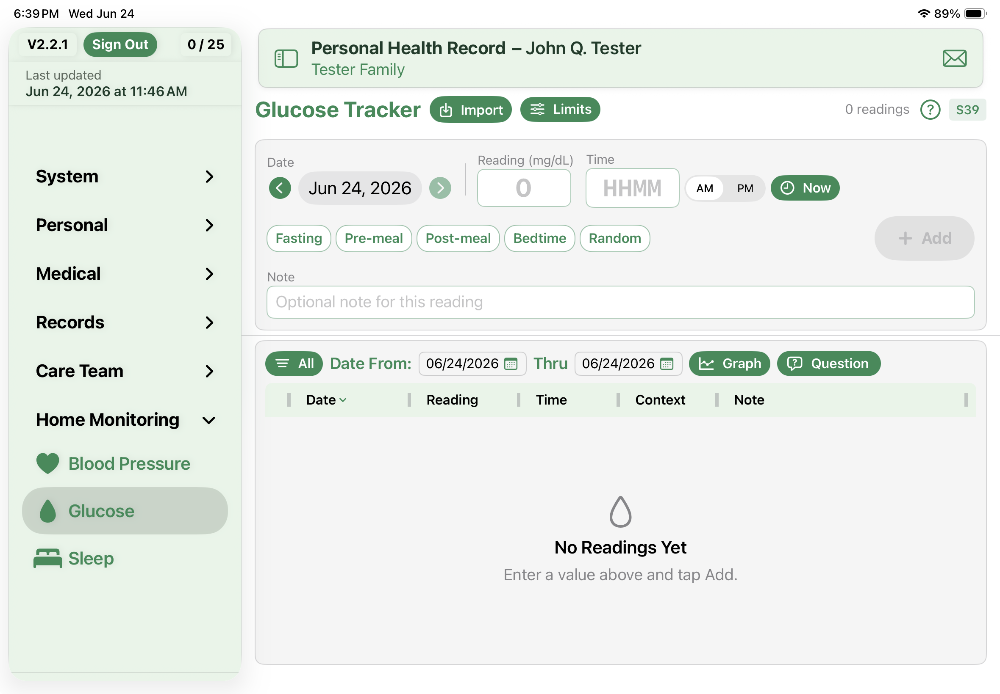

A Home for Your Blood Glucose Readings
The Glucose Tracker gives you one place inside PHR to log blood glucose readings and look back over them — sitting right alongside the rest of your health records, no separate app required.

Logging a reading
Entry is built to be quick, because you'll do it a lot. Each reading takes a date, a time, and the number, plus a couple of optional touches:
- The date carries forward from your last entry, so a run of same-day readings is just a tap.
- Time takes a four-digit value with AM/PM, or a Now button when you're entering it on the spot.
- Tag the reading with context — before a meal, after a meal, bedtime — and add a short note if you want.
- Adding several at once? They batch up and commit together when you tap Add.
Your readings land in a diary you can sort and resize by date, value, time, context, or source, color-coded against the target range you set. A small icon shows whether each one was typed by hand or imported.
Seeing the trend
Numbers in a list only tell you so much, so the tracker also draws them out. The graph shows a line trend with your target range shaded behind it, and a logbook view that lays readings out by day and meal-time so patterns are easy to spot. A Time-in-Range summary tells you how your readings sit against the band you picked. Tap any point — or any cell in the logbook — to pull up the exact readings behind it.
Setting it up
Open the Limits sheet to choose your units (mg/dL or mmol/L) and set the low and high bounds of your target range. That's what every color and summary measures against.
Where to find it
The Glucose Tracker lives in the Home Monitoring group in the sidebar, next to Blood Pressure and Sleep. Your readings travel with everything else, too — they're included when you Export to Excel and they're saved inside your backups automatically.